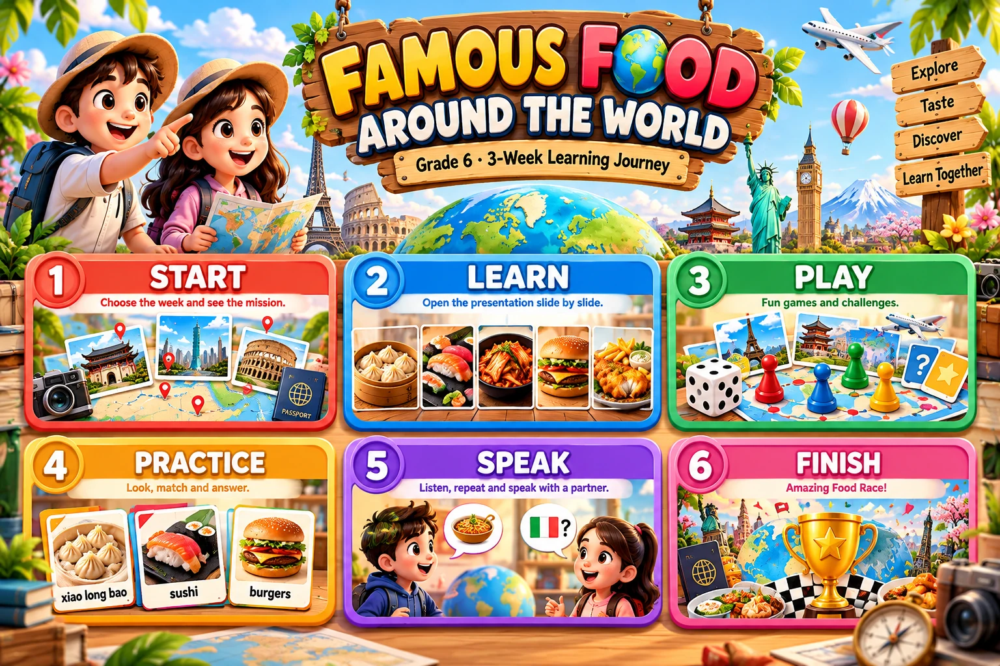

Tap any big panel in the picture to travel through the interaction.
1
Start
Choose the week. The lesson adapts as support is gradually removed.
2
Learn
The attached Grade 6 presentation, separated by week.
3
Play
Short auto-graded visual challenges before the main race.
Week 4 Challenge
What is Japan famous for?
4
Practice
Tap a card to hear the complete model sentence.
5
Speak
Different speaker each turn. Say the complete sentence aloud.
PARTNER PRACTICE
What is Japan famous for?
_____ is famous for _____.
6
Finish
Quick check, then launch the Amazing Food Race.

The Amazing Food Race
Use country-flag tokens. The game changes by week: supported passport missions, route choices, then detective challenges and Customs Check.
🎲
The Amazing Food Race
Embedded locally so the lesson and game can be hosted together.